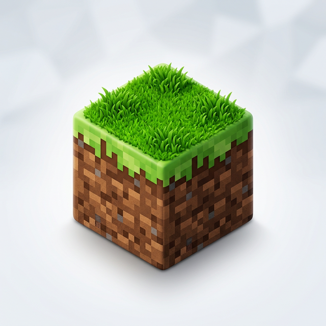

Crear nuevo mundo
Configura y genera una nueva instancia
Tipo de Servidor / Versión



Ajustes del Mundo
Generar estructuras
Aldeas, cuevas, fortalezas, etc.
Cofre de bonificación
Regalos de inicio cerca del spawn
🚀 Progreso de Instalación
0%